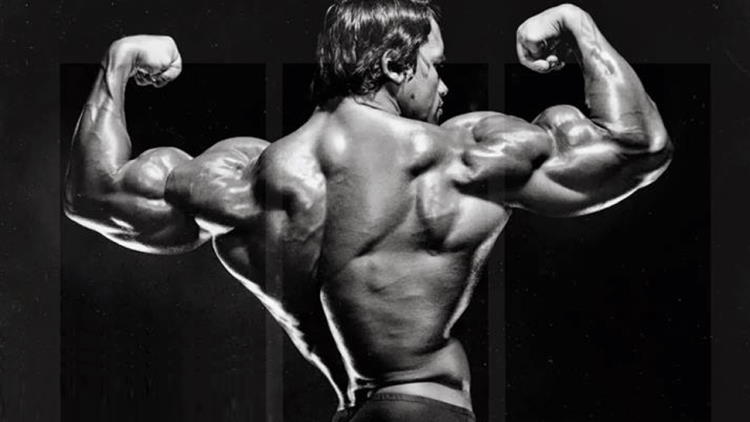

Sus Logros
Arnold Schwarzenegger es conocido en todo el mundo por sus muchos logros: campeón del mundo del culturismo, héroe de acción de Hollywood, exitoso hombre de negocios, ecologista, filántropo, autor éxito de ventas y 38º gobernador de California
Las horas practicando en el gimnasio, su preparación y dedicación lo llevaron a ganar el primer lugar del campeonato Mr. Europa en categoría en 1965. Dos años después, Arnold Schwarzenegger se coronó con el título Mr. Universo, uno de los campeonatos más importantes del culturismo Schwarzenegger ganó en tres ocasiones más el campeonato de Mr. Universo. El actor explica que este título fue su billete para comenzar una carrera exitosa en la industria del entretenimiento
